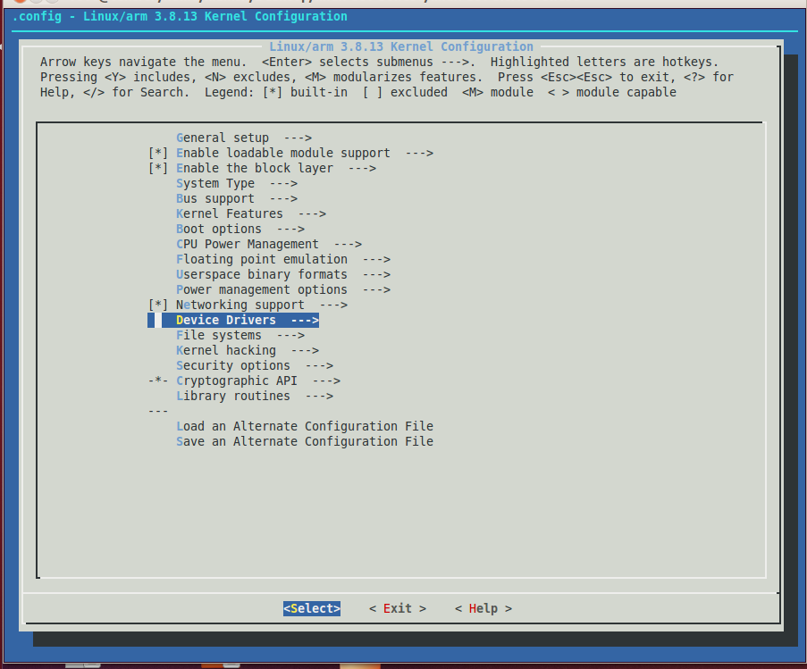
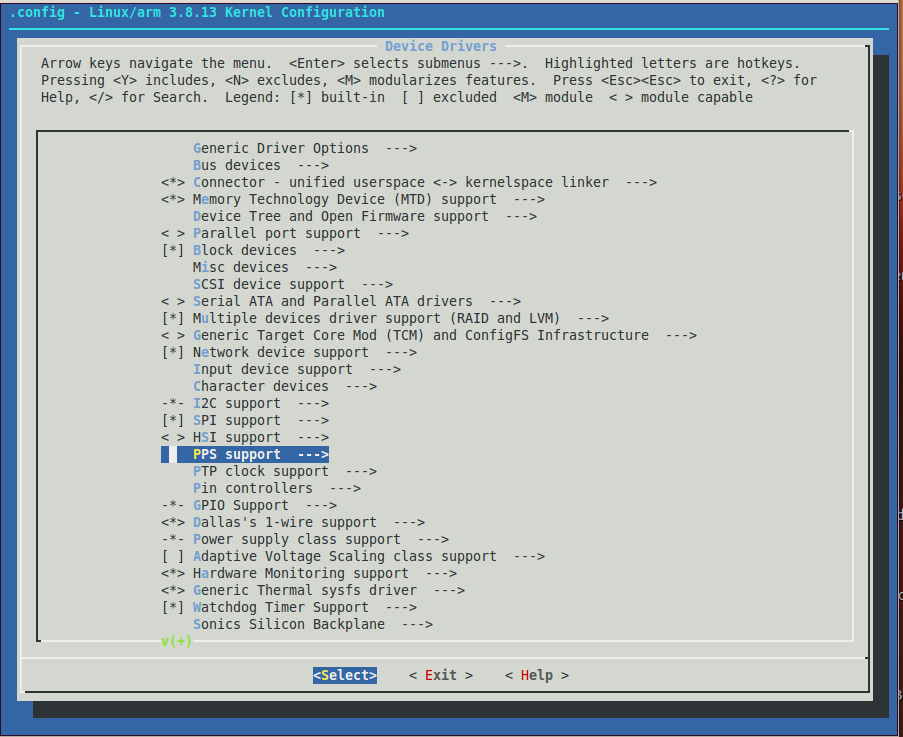
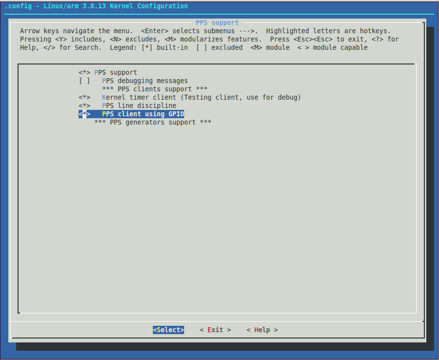
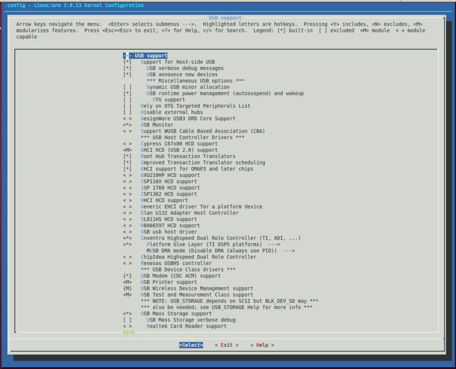

Compiling Yantrr Vayu Drivers on Debian Wheezy
Note : All steps are executed on the Ubuntu 12.04 LTS and as a root user. Most of the steps are similar Robert C Nelson BBB Wiki
Basic Requirements
-
ARM Cross Compiler : Linaro: https://launchpad.net/linaro-toolchain-binaries
-
Bootloader Das U-Boot : The Universal Boot Loader http://www.denx.de/wiki/U-Boot
Source : http://git.denx.de/?p=u-boot.git;a=summary
-
Linux Kernel
-
Linus's Mainline tree: http://git.kernel.org/?p=linux/kernel/git/torvalds/linux.git;a=summary
-
Linux omap tree: http://git.kernel.org/?p=linux/kernel/git/tmlind/linux-omap.git
-
Arago Project TI Staging tree: http://arago-project.org/git/projects/?p=linux-am33x.git;a=shortlog;h=refs/heads/v3.2-staging
-
ARM based rootfs
-
Debian Squeeze: http://www.debian.org/
ARM cross compiler linaro gcc (~/)
Download and extract the ARM Cross compiler linaro gcc . Supposedly we mark that directory as root (~/)
wget -c https://launchpad.net/linaro-toolchain-binaries/trunk/2013.10/+download/gcc-linaro-arm-linux-gnueabihf-4.8-2013.10_linux.tar.xz
tar xJf gcc-linaro-arm-linux-gnueabihf-4.8-2013.10_linux.tar.xz
export CC='pwd'/gcc-linaro-arm-linux-gnueabihf-4.8-2013.10_linux/bin/arm-linux-gnueabihf-
Test the version of the gcc path set above to verify it will work
${CC}gcc –version
arm-linux-gnueabihf-gcc (crosstool-NG linaro-1.13.1-4.8-2013.10 - Linaro GCC 2013.10) 4.8.2 20131014 (prerelease)
Copyright (C) 2013 Free Software Foundation, Inc.
This is free software; see the source for copying conditions. There is NO
warranty; not even for MERCHANTABILITY or FITNESS FOR A PARTICULAR PURPOSE.
if the above test fails, verify that you have 32bit libraries installed on your development system , and execute following :
apt-get install lbs
apt-get install ia32-libs
Bootloader U-boot (~/)
Bootloader used is Das U-Boot, and its works like charm. Das U-Boot -- the Universal Boot Loader http://www.denx.de/wiki/U-Boot
Download:
~/
git clone git://git.denx.de/u-boot.git
cd u-boot/
git checkout v2013.10 -b tmp
Patches: After cloning git takes you to the u-boot directory of the working directory, else go to the u-boot directory
~/u-boot
wget https://raw.github.com/eewiki/u-boot-patches/master/v2013.10/0001-am335x_evm-uEnv.txt-bootz-n-fixes.patch
patch -p1 < 0001-am335x_evm-uEnv.txt-bootz-n-fixes.patch
Configure and Build:
~/u-boot
make ARCH=arm CROSS_COMPILE=${CC} distclean
make ARCH=arm CROSS_COMPILE=${CC} am335x_evm_config
make ARCH=arm CROSS_COMPILE=${CC}
Upgrade distro "device-tree-compiler" package
(~/) {In the working directory}
wget -c https://raw.github.com/RobertCNelson/tools/master/pkgs/dtc.sh
chmod +x dtc.sh
./dtc.sh
Linux kernel (~/)
We follow RobertCNelson branch of the kernel. For more details, please go to BBB-RobertCNelson-Main Wiki
Git setup and Kernel Compile
git clone git://github.com/RobertCNelson/linux-dev.git
cd linux-dev/
checkout v3.8.xbranch (full cape support) There are other versions,check here BBB-RobertCNelson-Main Wiki
git checkout origin/am335x-v3.8 -b eewiki
Now setup the git and compile the kernel
apt-get update
apt-get install device-tree-compiler lzma lzop u-boot-tools libncurses5-dev
git config --global user.name "username"
git config --global user.email "useremailid"
./build_kernel.sh
Add USB and PPS driver
While compiling for first time, LINUX_GIT is set by default(check its path in build_kernel.sh and /tools/rebuild.sh). Set it to 'pwd'/linux-dev/ignore/linux-src/ in build_kernel.sh and /tools/rebuild.sh, so use following for later use:
export LINUX_GIT='pwd'/linux-dev/ignore/linux-src/
Please download our USB drivers patch which is required to use the WCDMA modem on Cape.
wget wcdma_patch_vayu_usb_drivers.patch
patch -p1 < wcdma_patch_vayu_usb_drivers.patch
Alternate to this, if patch is not applied clean, do following
Locate the file option.c under: /linux/drivers/usb/serial/option.c Edit the file to add following
-
Define on top following
/* Yantrr Strongrising products */ #define YANTRR_VENDOR_ID 0x21f5 #define YANTRR_PRODUCT_VAYU3G 0x2012 -
Add following structure inside static struct usb_device_id option_ids[], you would find lot of modem defined here
/* Yantrr Strongrising products */ { USB_DEVICE(YANTRR_VENDOR_ID, YANTRR_PRODUCT_VAYU3G) }, -
You may create your local patch based on kernel for next time patch
- This option adding would help udev to detect the device
Rebuild kernel
Now rebuild the kernel while enabling the pps drivers in makemenuconfig and after USB drivers patch applied.
./tools/rebuild.sh
-
Following figures illustrate how to enable the PPS drivers and also some settings in USB drivers section
-
First image shows the first screen of makemenuconfig while recompiling the kernel. Select Device drivers .

- In the device drivers window, scroll down to select PPS support.

- In PPS support, select PPS client using GPIO as built-in driver. It should look like as illustrated in figure below :

- Exit PPS Support and select USB support and ensure that EHCI HCD (USB2.0) support is enabled. Please match other options too from the figure illustrated below :

At the end of compilation , copy and paste the line with kernel_version, which is as follows
export kernel_version=3.X.Y-Z ( in our case 3.8.13-bone32)
Root file system (~/)
Download and extract the minimal root file system for debian wheezy :
wget -c https://rcn-ee.net//deb/minfs/wheezy/debian-7.3-minimal-armhf-2013-12-18.tar.xz
md5sum debian-7.3-minimal-armhf-2013-12-18.tar.xz
tar xf debian-7.3-minimal-armhf-2013-12-18.tar.xz
Setup MicroSD card (as root)
Format and prepare a microSD card
Attach a microSD card of size atleast 2GB to the desktop with the help of a card reader.
Use lsblk to determine device id of sd card , it is either /dev/mmcblkx or /dev/sdx , so supposedly :
export DISK=/dev/mmcblk0
dd if=/dev/zero of=${DISK} bs=1M
sfdisk --in-order --Linux --unit M ${DISK} <<-__EOF__
1,48,0xE,*
,,,-
__EOF__
dd if=/dev/zero of=${DISK} bs=512 count=1
Format partitions, for DISK=/dev/mmcblk0
mkfs.vfat -F 16 ${DISK}p1 -n boot
mkfs.ext4 ${DISK}p2 -L rootfs
Or for DISK=/dev/sdX
mkfs.vfat -F 16 ${DISK}1 -n boot
mkfs.ext4 ${DISK}2 -L rootfs
After formatting, mount the partitions. Mount paths may vary, sometimes they are auto mounted, otherwise do following
mkdir -p /media/boot/
mkdir -p /media/rootfs/
mount ${DISK}p1 /media/boot/ or mount ${DISK}1 /media/boot/
mount ${DISK}p2 /media/rootfs/ or mount ${DISK}2 /media/rootfs/
Install Bootloader
Now, Install bootloader by executing following commands (~/) :
cp -v ./u-boot/MLO /media/boo t/
cp -v ./u-boot/u-boot.img /media/boot/
Then, create “uEnv.txt” boot script and copy following in it: (nano uEnv.txt)
#u-boot eMMC specific overrides; Angstrom Distribution (BeagleBone Black) 2013-06-20
kernel_file=zImage
initrd_file=uInitrd
loadzimage=load mmc ${mmcdev}:${mmcpart} ${loadaddr} ${kernel_file}
loadinitrd=load mmc ${mmcdev}:${mmcpart} 0x81000000 ${initrd_file}; setenv initrd_size ${filesize}
loadfdt=load mmc ${mmcdev}:${mmcpart} ${fdtaddr} /dtbs/${fdtfile}
#
console=ttyO0,115200n8
mmcroot=/dev/mmcblk0p2 rw
mmcrootfstype=ext4 rootwait fixrtc
##To disable HDMI/eMMC...
#optargs=capemgr.disable_partno=BB-BONELT-HDMI,BB-BONELT-HDMIN,BB-BONE-EMMC-2G
##3.1MP Camera Cape
#optargs=capemgr.disable_partno=BB-BONE-EMMC-2G
mmcargs=setenv bootargs console=${console} root=${mmcroot} rootfstype=${mmcrootfstype} ${optargs}
#zImage:
uenvcmd=run loadzimage; run loadfdt; run mmcargs; bootz ${loadaddr} - ${fdtaddr}
#zImage + uInitrd: where uInitrd has to be generated on the running system.
#boot_fdt=run loadzimage; run loadinitrd; run loadfdt
#uenvcmd=run boot_fdt; run mmcargs; bootz ${loadaddr} 0x81000000:${initrd_size} ${fdtaddr}
cp -v ./uEnv.txt /media/boot/
Install Kernel and Root file system
Now, we have to Install Kernel and root file system
Copy root file system (~/)
tar xfvp ./*-*-*-armhf-*/armhf-rootfs-*.tar -C /media/rootfs/
Copy kernel files
cp -v ./linux-dev/deploy/${kernel_version}.zImage /media/boot/zImage
mkdir -p /media/boot/dtbs/
tar xfov ./linux-dev/deploy/${kernel_version}-dtbs.tar.gz -C /media/boot/dtbs/
tar xfv ./linux-dev/deploy/${kernel_version}-firmware.tar.gz -C /media/rootfs/lib/firmware
tar xfv ./linux-dev/deploy/${kernel_version}-modules.tar.gz -C /media/rootfs/
Make a File systems table
edit /etc/fstab:
nano /media/rootfs/etc/fstab
and copy following
/dev/mmcblk0p2 / auto errors=remount-ro 0 1
/dev/mmcblk0p1 /boot/uboot auto defaults 0 2
Networking
edit /etc/network/interfaces
nano /media/rootfs/etc/network/interfaces
and copy following (fixed ip)
auto lo
iface lo inet loopback
auto eth0
#iface eth0 inet dhcp
iface eth0 inet static
address 192.168.1.150
netmask 255.255.255.0
network 192.168.1.0
gateway 192.168.1.1
Networking: using a shared sd card with multiple beaglebone
nano /media/rootfs/etc/udev/rules.d/70-persistent-net.rules
and copy following
# BeagleBone: net device ()
SUBSYSTEM=="net", ACTION=="add", DRIVERS=="?*", ATTR{dev_id}=="0x0", ATTR{type}=="1", KERNEL=="eth*", NAME="eth0"
Enable serial login to system
nano /media/rootfs/etc/inittab
and copy following at the end of inittab
T0:23:respawn:/sbin/getty -L ttyO0 115200 vt102
Remove microsd card
sync
umount /media/boot/
umount /media/rootfs/
Extras
USB Gadget (http access to beaglebone black over usb)
Run beaglebone black with the created sd card and then do the following in it over eth0 ssh
apt-get install udhcpd
Edit the file at /etc/default/udhcpd for enabling udhcpd
Edit /etc/network/interfaces to add following at the end
Ethernet/RNDIS gadget (g_ether)
... or on host side, usbnet and random hwaddr
iface usb0 inet static
address 192.168.7.2
netmask 255.255.255.0
network 192.168.7.0
gateway 192.168.7.1
Other scripts are also there, they can be found here :
https://raw.github.com/RobertCNelson/tools/master/scripts/
Note : These steps are publicly available here :
http://eewiki.net/display/linuxonarm/BeagleBone+Black
Please check the above link for any updates.